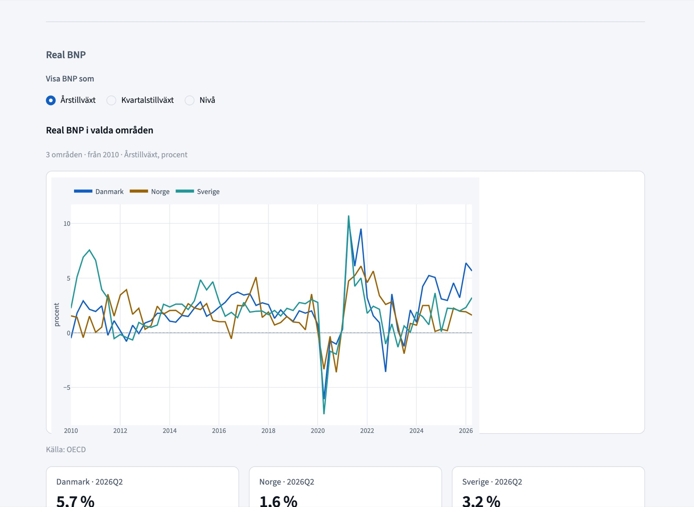
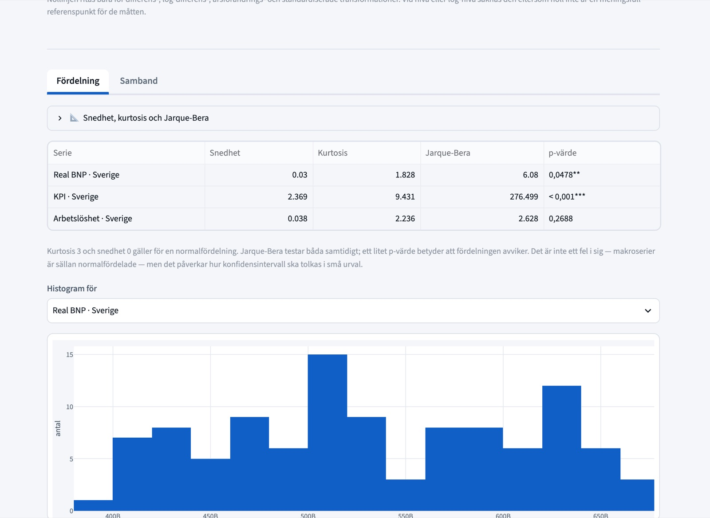
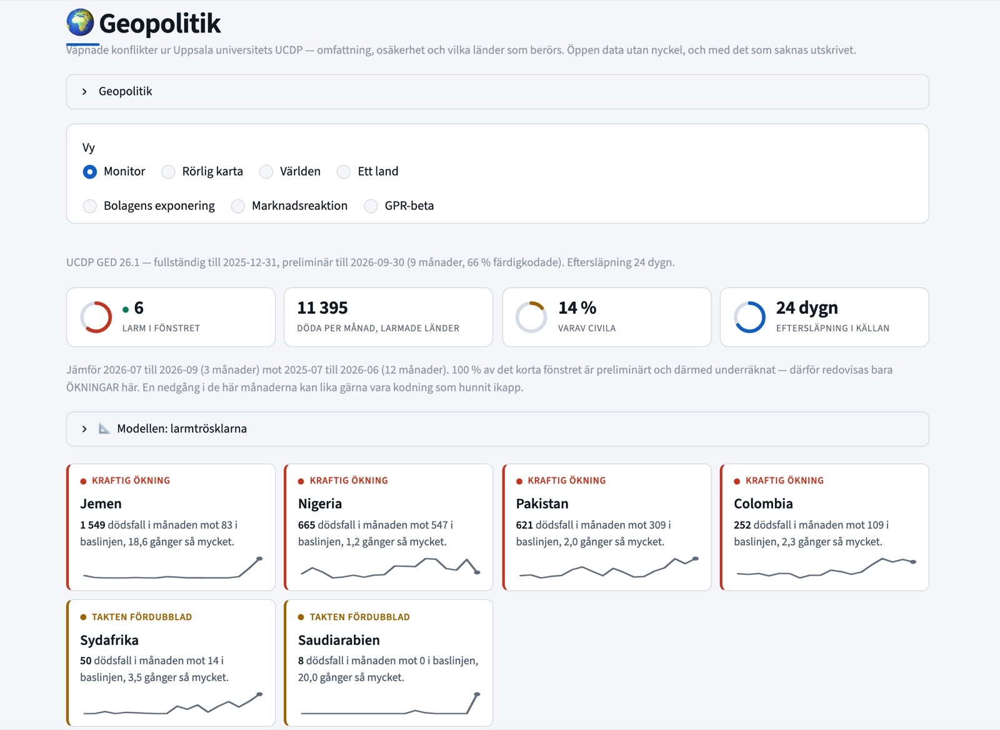
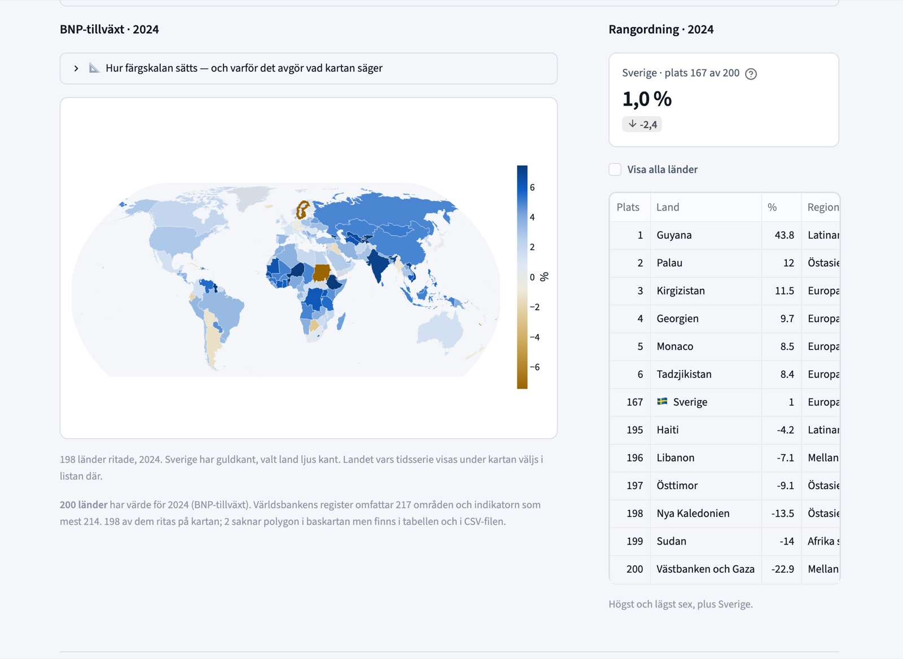
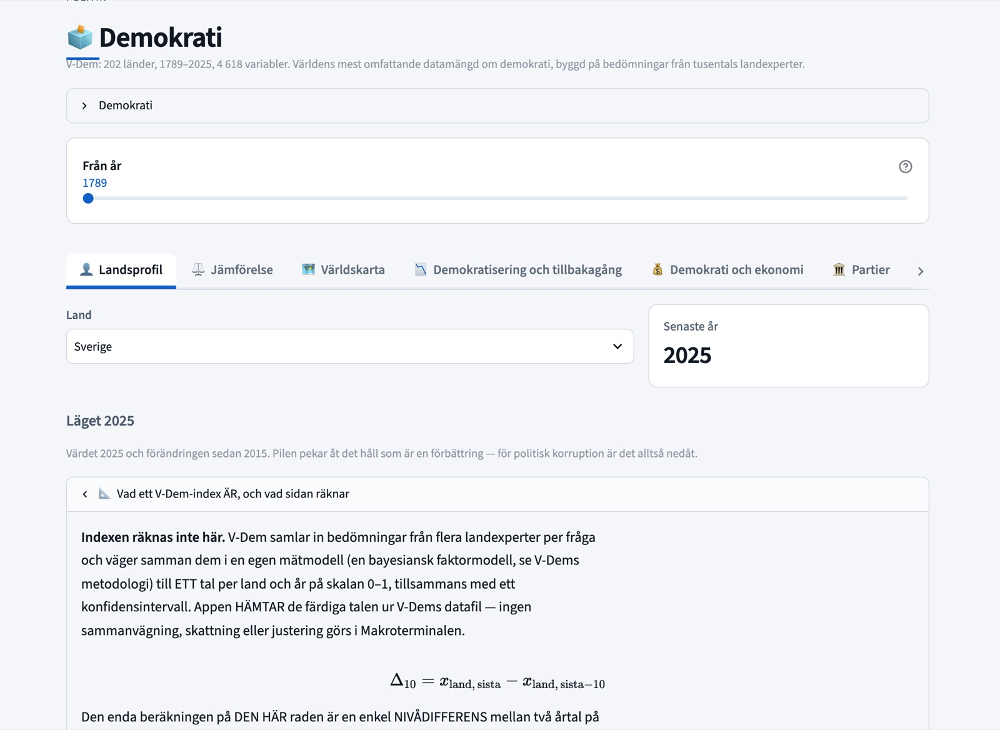

Makroterminalen
En analysplattform för makroekonomiska, finansiella och politiska data, byggd i Python och Streamlit sedan 2026.
Varför den finns
Den ekonomiska debatten är full av påståenden som är lätta att framföra och tidskrävande att kontrollera. Att pröva ett av dem betyder oftast att ladda ned kalkylblad från flera statistikmyndigheter, jämka ihop deras definitioner och frekvenser och först därefter komma fram till själva frågan. Jag byggde Makroterminalen för att samma kontroll ska ta några minuter: datan finns redan på ett ställe, i ett format, och verktygen för att analysera den ligger bredvid.
Vad den täcker
Plattformen samlar makroekonomiska data om tillväxt, priser, räntor, arbetsmarknad, handel och offentliga finanser, tillsammans med marknadsdata och portföljanalys. En världskarta och en avdelning för geopolitik följer konflikter och geopolitisk risk, och egna sidor tar upp politik, demokrati och politisk ekonomi. I centrum står ett ekonometrilabb med OLS, GLM, ARIMA, VAR och paneldatamodeller, där varje modell redovisas med diagnostik och robusthetstest. Runt det finns simuleringar, från Monte Carlo och bootstrap till spelteori och enkla makromodeller, en avdelning för maskininlärning och ett rapportverktyg som gör om en analys till ett dokument.


Hur den är byggd
Allt vilar på ett gemensamt variabelregister. Sexton adaptrar hämtar data från 29 olika källor och beskriver varje serie på samma sätt, så att en variabel ser likadan ut oavsett varifrån den kommer. Registret rymmer i dag 108 146 variabler. Appen har 24 sidor, fungerar på svenska och engelska genom ett översättningslager och finns i fem färgteman. Varje modell skriver ut sin egen formel, genererad ur koden i stället för hämtad ur en lärobok, och en statisk kontroll ser till att det förblir så. En testsvit kör varje sida på båda språken och i alla teman. Jag har utvecklat plattformen med AI-drivna kodverktyg, vilket har låtit mig lägga tiden på ekonomin och på att kontrollera resultaten.



Källor
Datan kommer från öppna källor: ECB, Eurostat, FRED, IMF, OECD, EU-kommissionens generaldirektorat för ekonomi och finans, Our World in Data, SCB och andra PxWeb-register, UNHCR, Reportrar utan gränser, indexet för geopolitisk risk, HDX HAPI, Uppsala Conflict Data Program, V-Dem och Världsbanken.
Att se den
Makroterminalen körs lokalt på min dator och finns inte tillgänglig på nätet. Jag visar den gärna, till exempel vid en intervju. Hör av dig.